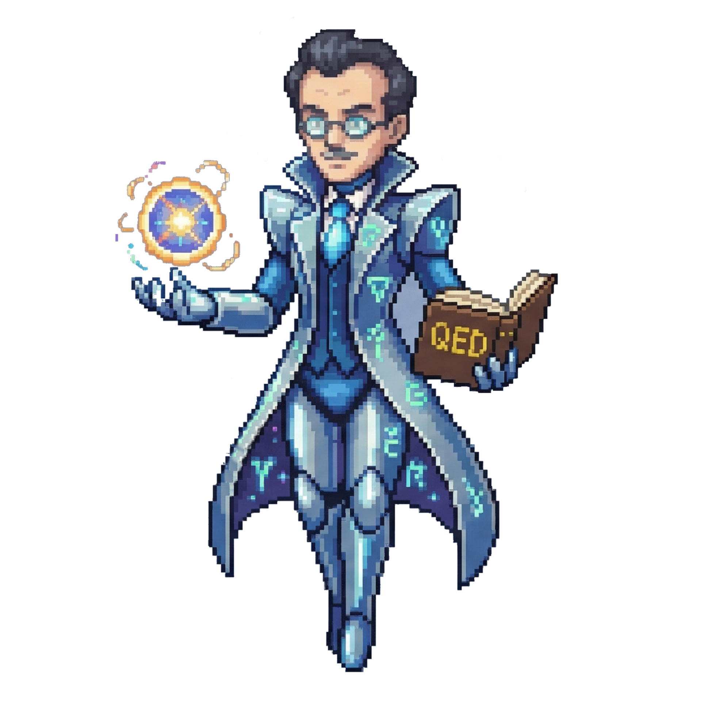
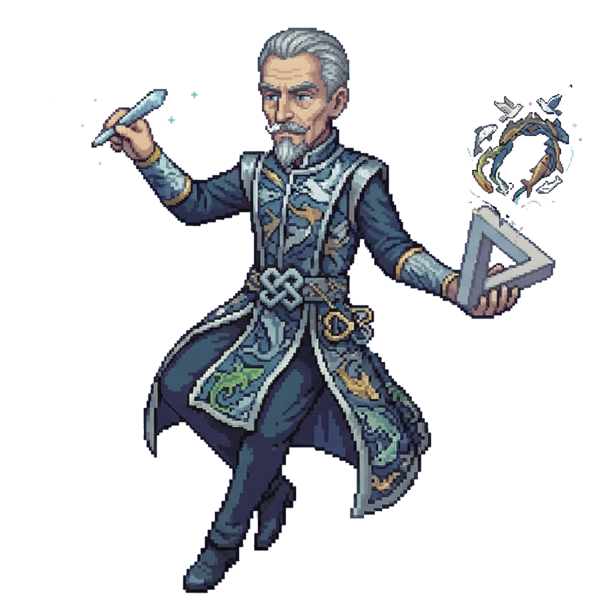
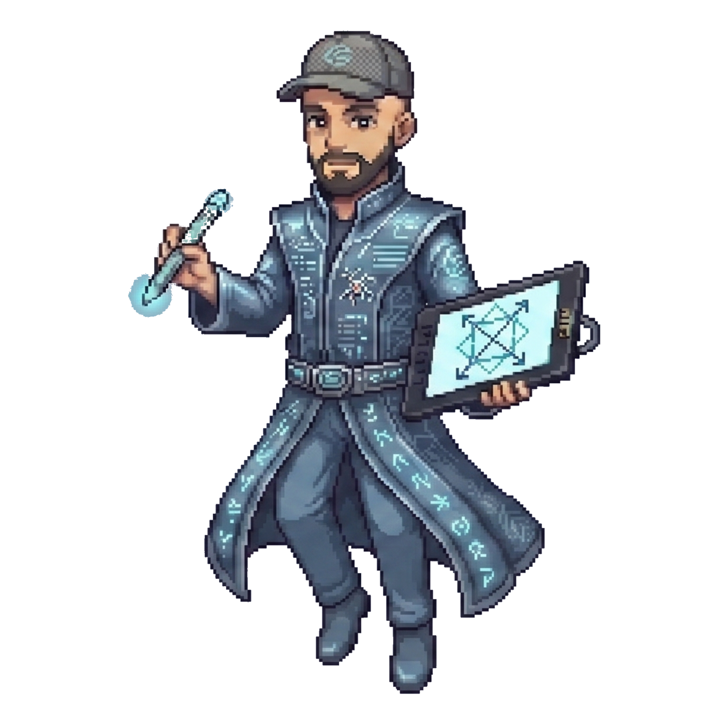

Second Wednesday of March, ten minutes to nine AM. The 107 bus is packed and the closer it gets to Ciudad Universitaria, the closer the average age gets to mine. Andrés Calamaro is playing in my earphones and I kill time with a simple game: guessing who, among my fellow passengers, is going to the School of Architecture, Design and Urban Planning (FADU) and who’s going to the School of Exact Sciences (Exactas) — two campuses of the University of Buenos Aires, only separated by a single street.
The girl with bangs, the long skirt, and the tote bag: definitely FADU. Dude in baggy jeans, chains, and an Arturo Fuego® t-shirt too. Worn-out backpack, sneakers, and skinny light washed jeans: Exactas. Eight out of ten times I get it right. There’s something which gives it away: apparently aesthetics, leather boots, and accessories belong to art and design, while science is left only with the practical and useful. As if beauty had an owner.
I hop off at Exactas, but sometimes I dream about staying those extra 200 meters to FADU. Growing up, even though I always had terrible drawing skills, music and crafts always fascinated me. In high school, every time there was an oral presentation, I’d spend more time curating the aesthetics of the PowerPoint than I did on the content itself. After briefly considering studying law (luckily that phase only lasted a few months), I decided to study physics. Deep down I knew that hard sciences were my thing, but, at the same time, there was something holding me back. I was 18, I wanted to be cool, and I had this feeling that was going to be incompatible with a career in hard science.
During the first months at uni everything seemed to confirm it. Everything was calculus and rigor: “prove this”, “justify that.” My friends at FADU were designing projects with models and posters, and I was painfully aware that nobody wanted to hear about the new type of integral I’d just learned to solve. A few months into my degree, however, with this constant buzz in my ear, I began to notice something. Almost everything I had to work on during classes could be solved in two ways:
by brute force, grinding through endless calculations, dragging terms and filling pages with algebra
With creativity, finding an elegant solution through symmetries and changes of variables.
This second way wasn’t just shorter; it was more beautiful. There was something aesthetically satisfying about exactly finding the best possible path, like when a melody resolves to the perfect chord. In 1918 Emmy Noether proved that where there is a symmetry, there is something that is conserved. Not decoration nor coincidence: it was information, content. Elegance was telling you something about the structure of the problem if not about the world itself.



You’ve chosen Dirac!
Let’s see how the beauty of an equation led a physicist to discover antimatter.
It’s 1928 and Paul Dirac is a 25-year-old British physicist so science-centered that he will publish a paper during his honeymoon. The main quest is this: How to marry quantum mechanics (the physics of the smallest things) with Einstein’s special relativity (the physics of things traveling close to the speed of light).
These two theories worked perfectly on their own but contradicted each other when combined. The result of that obsession was a dazzling formula:
Within a single line, everything fits together: quantum mechanics lives in the wave function $\psi$, relativity in the matrices $\gamma^\mu$, and the fundamental constants of the universe: the speed of light, the electron mass, Planck’s constant, woven together with such effortless elegance.
It’s like a haiku of nature: it says everything essential without a single unnecessary syllable. Two seemingly incompatible theories, reconciled in a single mathematical gesture. But getting back at it—
The equation yielded two types of solutions: one described the electron perfectly, along with everything known about it. The other implied the existence of something with no physical sense and for which there wasn’t a shred of evidence. The electron’s evil twin, with positive charge and negative energy.
Any reasonable person would have thrown the equation into the trash —the negative solution, at least. If the model predicts something that doesn’t exist, the model is wrong, right? But Dirac did something at the limits of madness: he defended his theory almost exclusively on the basis of its beauty.
His argument was, in essence, aesthetic: an equation so symmetric, so compact, so elegant, had to be describing something real. It was easier to believe that God is an artist than to accept that he got there through some miraculous mistake. And he was right.
Four years later, in 1932, Carl Anderson detected a particle in cosmic rays exactly like the one predicted by the equation: the positron, the antiparticle of the electron. The beauty of a formula had guided an enamored physicist toward the discovery of antimatter —the hidden half of the universe that nobody suspected existed.
I came across this story on a Thursday in July, during the winter break after my first semester. I saw online that there would be an open talk titled “Beauty as a Scientific Criterion.” I had never gone to a talk like this before, afraid I wouldn’t understand a single word, but this topic was particularly appealing to me; and at least I knew every word in the title, so I went. The auditorium was surprisingly full. The speaker, a man with a Spanish accent and his hair tied back in a ponytail, was a well-known science communicator: José Edelstein. He began talking about symmetries, Lie groups—words which sounded like a foreign language to me. He even explained the Dirac equation in all its formalism, and I stared at the symbols on the board like someone looking at hieroglyphs. I understood, perhaps, five percent. But when he put down the chalk, turned around, and told this story, all the thoughts floating in my head suddenly fell into place at once.
I walked out of the main auditorium into the fresh river air and waited for the bus to go home. This time I wasn’t worrying about how I or the FADU students were dressed. I had understood that physics is inherently beautiful.
You’ve chosen Escher!
Let’s see how an artist with no mathematical training unknowingly worked at the boundaries of mathematics.
It’s 1956. M. C. Escher is working on Print Gallery. A young man stands in a gallery, looking at a painting of a Mediterranean port. But the port expands, bends, wraps around the gallery—and ends up containing the man himself. An impossible loop, a snake eating it’s own tail. At the center, where everything should close, there’s a blank white patch with Escher’s signature. He tried to fill it, and couldn’t make it work.


Almost 50 years later, in 2003, two Dutch mathematicians decided to investigate the grid which Escher had used as a base. They discovered something extraordinary: although the plane is brutally twisted, if you zoom in, every small square of the grid remains perfect, its lines cross at 90 degrees. Escher had achieved a global deformation without breaking the local structure.
To solve the mystery of the white patch, the mathematicians had to reverse-engineer it. They discovered that for the loop to work, the base image had to be contained within itself (like the Droste effect, where a picture contains a smaller version of itself). To turn that flat image into Escher’s loop, they applied a three-step process:
Unrolling the space: They used a mathematical function (the complex logarithm) which takes the image and “flattens” it into an infinite tapestry. Here, the action of zooming into the original painting is transformed into moving sideways across the tapestry.
Shifting the image: They rotated that infinite tapestry a little. Just enough to “connect” the large version of the image with its smaller version.
Rolling it back up: They applied the inverse function of the logarithm (the exponential) to warp that modified tapestry and roll it back up into a spiral.
What happens if you take the logarithm of an image?
Magnitude = stretch • angle = rotation.
a = 1.00 b = 0.00 |z| = 1.00 θ = 0°
With the geometry domesticated in the flat tapestry, they managed to fill in the missing area coherently — artist Jacqueline Hofstra redrew the details by hand onto the flat grid — and when they “rolled up” the image again by applying the final exponential, the miracle happened. The white patch area filled in with the entire image once more, rotated by about 157 degrees and reduced by a factor of 22. And inside that copy another, and another, and another. The painting contained itself like a perfect fractal. Escher’s white patch was, literally, an infinity which didn’t fit on the paper. It wasn’t that Escher didn’t know how to fill the center of the page. He would have had to draw the infinity.
What makes this even more fascinating is that Escher had no mathematical training. He knew nothing of complex analysis, holomorphic transformations, or the complex exponential. He built that conformally deformed grid guided exclusively by his eye. His obsession was purely aesthetic: the buildings at small scale shouldn’t look distorted, the human eye must accept the deformation without protest. Without knowing it, these aesthetic criteria led him to implement, with total precision, the mathematics which describe the structure of his own work.
I came across this story through a happy coincidence. While writing this article, I was looking for a case where science had been used in service of art. One night I got together for dinner with my friends, and after telling them about my idea for the piece, Oliverio — a physicist like me — said: “Have you seen the video 3Blue1Brown put out yesterday? It’s amazing.” One of my favorite science communicators, who usually uploads videos related to beauty in mathematics, had just published one about mathematics in art — exactly what I needed.
While the video clearly explains all the concepts needed to understand the Smit and Lenstra paper, the main takeaway (or at least what I took away) is understanding that Escher’s artistic sensibility — to which he owes his fame — is nothing more and nothing less than an extremely sharp mathematical intuition transposed on paper.
Escher didn’t discover the mathematics of his work; the mathematics discovered him, fifty years later. And that left me thinking: if an artist can arrive at the same truths as a mathematician without knowing a single formula, then perhaps math is not invented but discovered. Perhaps beauty and science are not two different paths, but the same path walked from opposite shores.
You’ve chosen Lenny!
Let’s see how the need to learn how to code led a young man to make art.
In my second year, during Calculus II classes, when we had to graph three-dimensional surfaces in GeoGebra to better understand an integral or a vector field, Victoria and I would get distracted and sit staring at the screen of my tablet, playing with the surface parameters just to see what would happen. We’d change a coefficient, a frequency, an exponent, and suddenly shapes would appear on the screen that had no practical use but left us speechless. Surfaces folded like petals, coiled like snails, or burst into unexpected symmetries.
Studying physics, you quickly realize that knowing how to code isn’t a luxury, it’s more like a survival tool. The problem is that no one teaches you how to code in any structured way. They throw you in the water and wish you good luck. So, instead of reading manuals or taking online courses, I set myself the challenge of learning Python in the only way which could keep me interested: making art.
The idea came directly from (if not during) those mornings in calculus class, from the wonder those surfaces produced in us. It occurred to me that this could be exploited to generate beautiful things on purpose.
I started from the lowest possible level: generating images and animations using
only parametric equations in Matplotlib, Python’s most basic graphics
library. No 3D models, no computer-aided design, no cheating —except for a
little AI to help me with the code. Just np.arrays and equations.
The interactive scene which accompanies this history is exactly that: the result of that experimentation, translated to JavaScript. What you see here is not hand-modeled through any design program. It’s a purely numerical landscape. Each element in the scene is generated by the equation shown in its label.
Left Button Drag — translate camera
Scroll — zoom in/out
One finger drag — rotate camera
Two finger drag — translate camera
Pinch — zoom in/out
▶ — play/pause butterfly
Eq — show equations & axes
⛶ — fullscreen
The treetops are born from modulating an ellipse with cosines, using very few points to exploit the way Matplotlib (here three.js) continuously graphs discrete data and thus give the “chaotic” touch of leaves. The exotic flowers are combinations of exponentials and harmonics in polar coordinates, using thousands of points to ensure their smoothness. The butterfly — its body, its wings, its head — is formed by three-dimensional parametric functions. Even its flapping and trajectory are dictated by equations of motion, curves in space that decide how it turns, how it glides, how it rises.
My digital art has evolved since those early days, and my workflow has naturally expanded into dedicated environments like TouchDesigner. Even so, I try to stay true to my original essence: every piece must be born from something I learned in my degree. Whether it’s a concept, a system of differential equations, or a transformation I saw in class and thought was too beautiful to never leave the blackboard, any such thing may become the foundation of my piece. It’s my way of not letting knowledge become purely utilitarian—a way to bring the inner beauty of science to light.
I think of that teenager who was afraid of losing his sensitivity when entering a hard science, who thought equations would slowly wear down the part of him which cares about beauty. Luckily, today I can tell him the exact opposite. Science doesn’t dry you out; it gives you a new language to express yourself and your thoughts, a more precise way of naming things you used to feel only vaguely. Understanding how things work usually ruins the magic, unless you start to see the magic in how things work, and then you will never stop being amazed.
If I hadn’t started studying physics, if I hadn’t been pushed to learn to code, I would never have started upon this journey in digital art in which open doors to different universes keep appearing. I would have never understood that beauty isn’t just dressing well or decorating a PowerPoint, and that science isn’t just solving pendulums and integrals. They are not separate tools, but two mirrors placed directly opposite one another. They face each other in a silent, endless conversation, creating a corridor of reflections that stretches into infinity. The magic isn’t in one or the other, but in the dialogue happening in the space between them, where every reflection reveals a version of the world you couldn’t see from just one side.